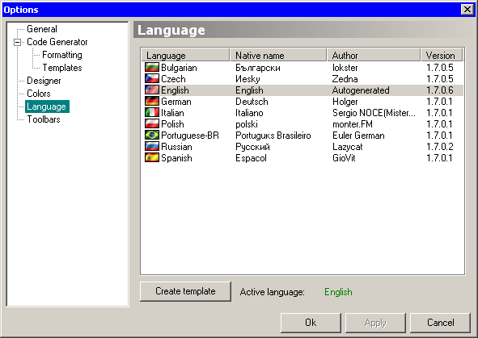

This is one of most obvious panes. In the list above you can select the desired language for GUI localization, and click “Apply” button to make it active. The current active language is shown in green just below languages' list.
If you want to create your own language file, choose a language on which it will be based (don't forget to click “Apply” after selection), then click “Create template” button. A new language XML file will be created in Language folder under the generic name of template_xxx.xml. It will have all settings and translations of selected language, plus new strings that might have been added since base language version release, as well as some strings may be removed or renamed.
Translate those strings and rename file to lang_xxx.xml, where “xxx” is a 3-letter code for your language (e.g. eng, rus, fra, etc.). If you need to change the flag icon, please download language kit from Koda's homepage.